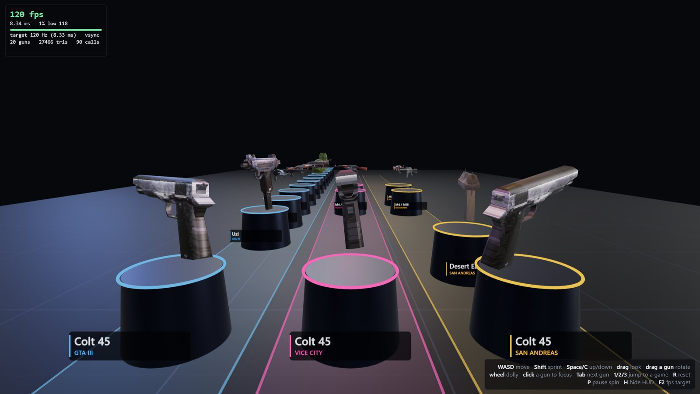
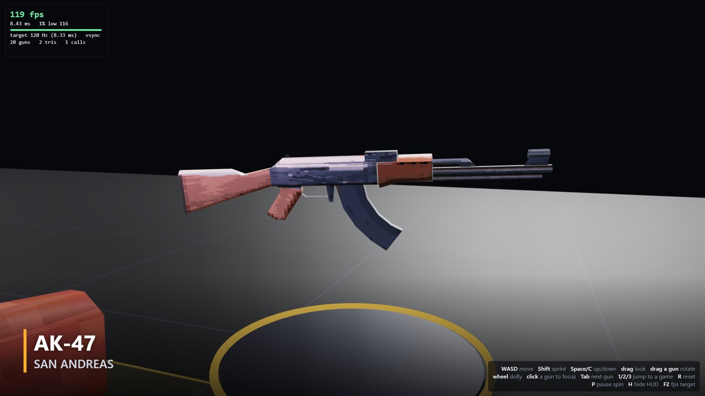
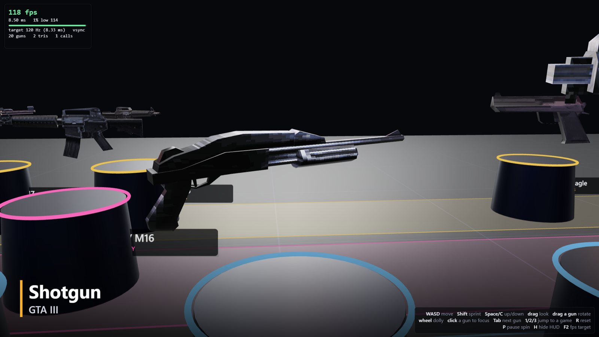

Open source · MIT
Weapon models from your own PS2 discs.
A script that pulls the guns out of GTA III, Vice City and San Andreas disc images, and a 120 Hz viewer that shows them side by side. A JSON file turns the viewer into a camera rig that renders video.
- Weapons
- 20 models, 3 games
- Viewer
- Electron + three.js, 119.6 fps average at a 120 Hz target
- Extraction
- 34 s, no GUI, disc images are read-only
- Capture
- JSON to MP4, deterministic, any fps
Footage
Rendered by the viewer itself, 1080p at 60 fps.
Screenshots
Captured from the running viewer.



How it works
From disc to viewer in five steps
- Read the ISO 9660 disc image directly. Nothing is mounted or modified.
- Find the weapon files: one multi-part file in GTA III, per-weapon files inside the IMG archive in Vice City and San Andreas.
- Convert PS2-native geometry to plain RenderWare geometry with aap's open-source
convdff. - Unswizzle the PS2 textures to PNG, then write OBJ and MTL files.
- The viewer loads them, stands them upright, scales them to one size and lets you walk around.
Set up
Bring your own discs
No game files, models or textures are in the repository. You need Node.js 22+, Python 3.9+, git and a C++ compiler on PATH.
git clone https://github.com/devin-thomas/gta-ps2-model-viewer
cd gta-ps2-model-viewer
npm install
python tools/extract.py --gta3 "GTA III.iso" \
--vc "Vice City.iso" --sa "San Andreas.iso"
npm startOn Windows, double-click Gun Viewer.cmd after extraction. Any subset of the three games works.
Limits
- Tested with the USA discs: GTA III, Vice City v1.40, San Andreas v1.03.
- 20 weapons today. Liberty City Stories, Vice City Stories, Xbox and PC versions, vehicles and characters are not done.
- Models are plain OBJ without vertex colours, so they look flatter than in game.
- Windows is the tested platform.